沿着手写数字识别实例，推导逐层计算、参数数量与矩阵表示。
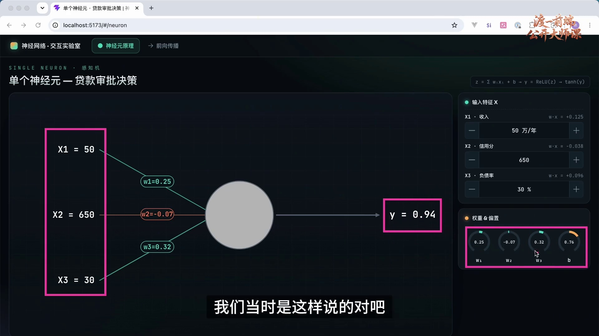
单个神经元接收向量输入，先计算加权和与偏置，再通过激活函数产生一个标量输出。在输入、激活函数和计算方式固定时，权重与偏置决定其输出。训练的目的，是通过调整这些参数，使输出更符合任务要求。
实际神经网络由多个相互连接的计算单元组成。一个节点的输出可以成为后续节点的输入，各节点的参数共同决定整个网络的结果。理解单个神经元之后，下一步是理解信息怎样沿着这些连接逐层计算。
本章以手写数字识别为例，先解释输入与输出的含义，再推导各层计算和参数数量。示例网络共有 26,058 个可训练参数，具体计算将在后文展开。
左侧三个输入通过带权重的连接进入一个节点，右侧显示输出；控制区用于调整权重与偏置。这种单节点计算是理解多层网络的基础。
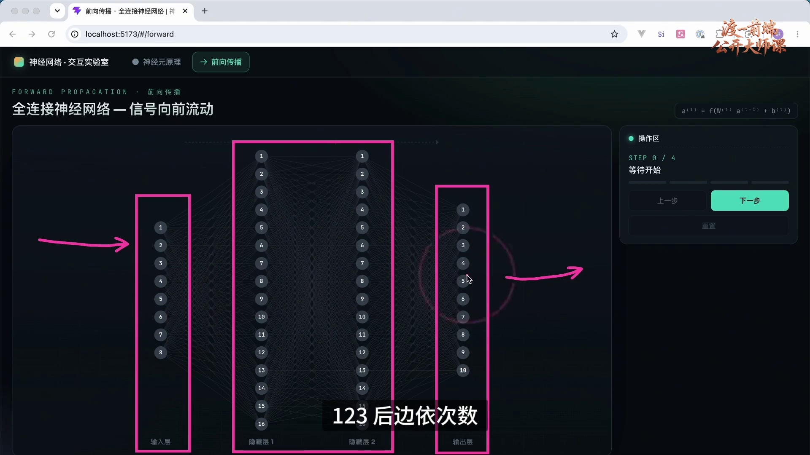
本例采用前馈全连接网络，节点按计算顺序分为输入层、两个隐藏层和输出层。输入层提供数据；隐藏层逐步变换这些数据；输出层产生用于完成任务的结果。
可以把整个网络看作一个复合函数：输入向量经过多层运算，得到输出向量。隐藏层的数值是计算过程中的中间表示，不是额外提供的标签。
常见编号方式将输入记作第 0 层，将第一个隐藏层记作第 1 层，再依次编号。本例的第二个隐藏层是第 2 层，输出层是第 3 层。使用名称或数字编号都可以，但在公式中必须保持一致。
四列节点依次对应输入层、隐藏层 1、隐藏层 2 和输出层。箭头表示数据从左向右参与计算；输入列只是对输入向量的可视化。
隐藏层的数量称为网络深度的一部分，每层的单元数决定该层的宽度。不同架构可以具有不同深度和宽度，同一个网络的各层也不必一样宽。这些选择会影响模型表达能力、计算量和训练难度。
深度与宽度并不是越大越好。工程上需要结合任务、数据规模、计算预算和验证结果选择结构；如果效果不理想，可以调整结构并重新训练或采用合适的结构变更方法。不能仅凭一个型号名称推断模型的层数，也不能把未经公开确认的规格当作事实。
下面使用一个小型网络识别手写数字图片。它的输入来自图片，输出对应 0 至 9 共十个类别。重点是理解计算链条，不是复现某个大型语言模型的完整架构。
界面左侧是手写数字样本，中间是分层网络，右侧的“下一步”用于逐步展开计算。输入列只画了少量节点，不能把图上的数量当作实际像素数量。
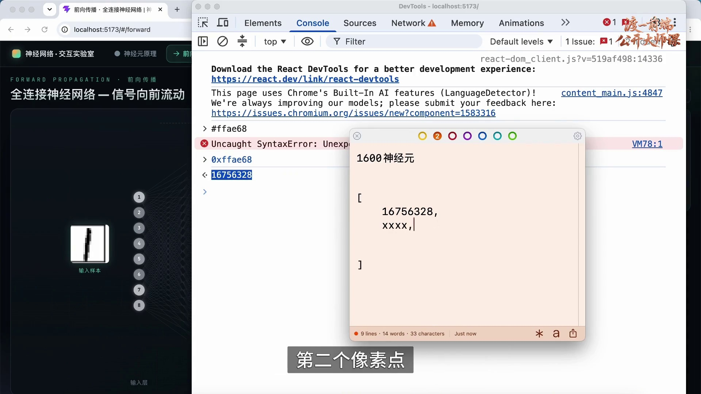
图片必须先表示为数值张量，才能参与网络计算。对于本例，可以将手写数字图像处理为 40×40 的单通道灰度图，每个像素用一个灰度值表示，再按固定顺序展开为向量。
40×40=1600，因此输入向量包含 1600 个数。输入层相应地画作 1600 个输入位置；为了让网络图易于阅读，示意图只显示 8 个。训练和推理必须采用一致的像素顺序与预处理方式。
彩色图像通常分别保留 RGB 三个通道；同样尺寸的 RGB 图像展开后通常包含 40×40×3=4800 个数。十六进制颜色确实可以编码为一个整数，但这不等于它适合直接作为连续数值特征：把颜色打包成整数会混合通道含义。本例的 1600 个输入以单通道表示为前提。
像素值还可以缩放到适合计算的范围，例如将 0～255 的灰度值除以 255，得到 0～1 的数。预处理后的向量就是网络的输入。在这里的结构中，输入位置本身没有需要训练的权重与偏置。
节点明暗用于显示输入值大小。每个输入值沿连接传给第一个隐藏层，而不是在输入列中再执行一次神经元的加权计算。
图中“1600”对应 40×40 个单通道像素，8 个圆点是简化表示。控制台展示的十六进制颜色仅说明颜色可以编码；实际建模通常保留各通道数值，不直接把打包后的 RGB 整数视作灰度值。
本例设置两个隐藏层，每层 16 个神经元。这是用于说明计算过程的小型结构，不是所有数字识别任务都必须采用的配置。实际结构需要通过实验和验证选择。
前向传播时，各隐藏单元根据输入与自身参数计算输出，这个输出也称激活值。图中用亮度编码激活值：较亮表示数值较大，较暗表示数值较小。这是可视化约定，不等于每个节点都有一个事先命名的识别职责。
训练通常不会人工规定某个隐藏单元专门识别哪一笔画。它们会形成由数据和优化过程共同决定的表示。有些特征可以通过可视化和分析得到解释，但不能保证每个单元都对应一个独立、直观的人类概念；同样，也不能笼统地说所有内部作用都不可研究。
第一隐藏层的 16 个节点亮度不同，表示它们对当前输入产生了不同激活值。连接和亮度展示计算关系，不是对节点语义的人工分工。
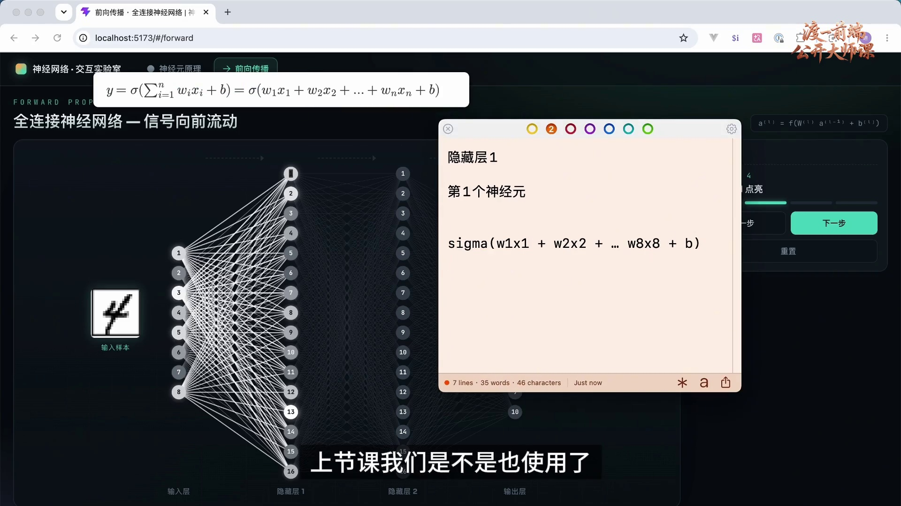
对第一个隐藏神经元，设输入为 x₁,…,x₁₆₀₀，权重为 w₁,…,w₁₆₀₀，偏置为 b。它先计算 z=Σᵢ₌₁¹⁶⁰⁰wᵢxᵢ+b，再计算 a=φ(z)，其中 φ 表示选定的激活函数。
每个输入位置都与这个神经元相连，所以称为全连接。图中写到 w₈x₈ 只是对应八个可见输入的示意；在 1600 维输入的实际设定下，求和必须包含 1600 项。其他网络可以采用卷积、注意力等结构，不能简单地把这些结构解释成全连接网络“少算几项”。
训练开始前需要初始化参数。权重常按某种规则随机初始化，偏置可以初始化为零或其他值；并非所有参数都必须从正态分布随机抽取。参数初始化一次后会在训练中被更新，不能在每次前向传播时重新随机生成。
激活函数具有明确的定义。Sigmoid 是 σ(z)=1/(1+e⁻ᶻ)，ReLU 是 max(0,z)，二者并不相同；“除以最大值”也不是 Sigmoid 的定义。用 φ 表示通用激活函数，可以避免把函数名称与符号混淆。
第一个隐藏节点接收所有输入，便签逐项展开权重与输入的乘积。上方公式中的 σ 若表示通用激活，需要另行指定函数；若明确指 Sigmoid，则只能使用其确定公式，不能替换为“除以最大值”。
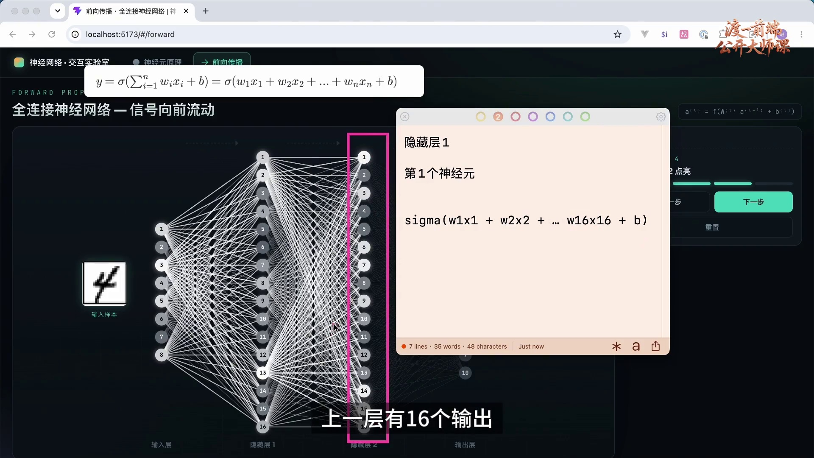
第一隐藏层的每个神经元接收到相同的输入向量，但拥有各自的权重向量和偏置。因此，同一张图片经过这些不同的计算，通常会得到不同的激活值。相同输入并不要求不同节点输出相同；不同参数也不保证在所有输入上都输出不同。
计算完第一隐藏层的 16 个激活值后，将它们组成一个新的向量，交给第二隐藏层。第二隐藏层的每个神经元都接收这 16 个值，因而有 16 个对应权重和 1 个偏置。
一般地，全连接层中一个神经元的权重数量，等于前一层输出向量的长度。第一隐藏层的每个神经元有 1600 个权重，第二隐藏层的每个神经元有 16 个权重。层与层之间重复使用相同的计算结构，但参数并不共享。
第二隐藏层的输入来自上一层 16 个节点。便签中的求和末项变成 w₁₆x₁₆，强调输入维度由前一层宽度决定。
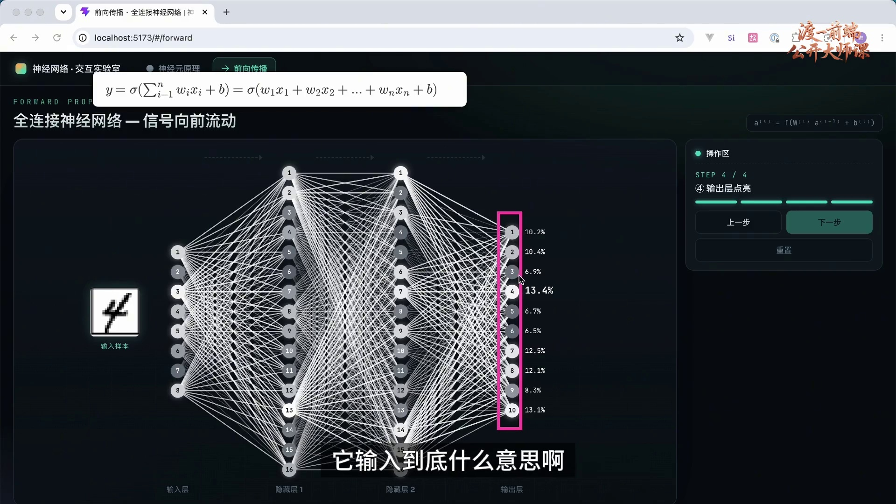
第二隐藏层计算完成后，其 16 个输出传入输出层。本例输出层包含 10 个计算单元，每个单元先对这 16 个输入进行加权求和并加上偏置。输出端再根据任务需要进行适当变换。
这 10 个位置分别对应数字 0、1、2、…、9。类别与输出位置的对应关系由任务设计确定，必须与标签编码一致。例如第一个位置对应 0，第二个位置对应 1，而不是将节点的顺序编号误当成类别。
数值运算描述了预测怎样产生，但单凭加权计算的存在，不能据此得出关于意识的结论。对本例而言，需要明确的是输入表示什么、每个输出位置表示什么，以及怎样评价预测是否正确。
输入与输出维度都需要设计。固定尺寸的全连接网络要求输入长度一致；不同大小的图片需要经过适当的尺寸处理，再采用一致的数值预处理。
输出列实际有 10 个节点，分别对应十个数字类别。前面示意输入只画了 8 个节点，并不意味着输出也应有 8 个。
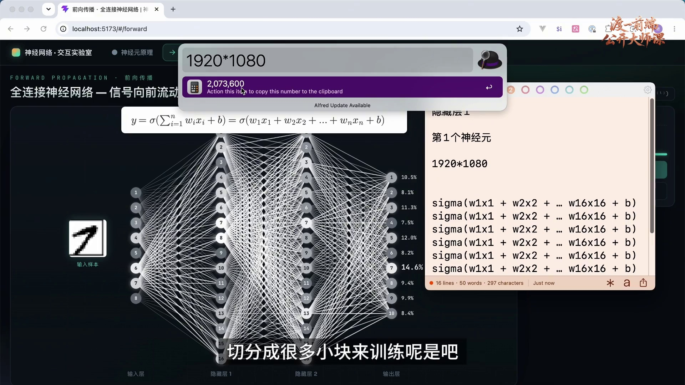
若将 1920×1080 的单通道图片直接展开，输入向量长度为 2,073,600；若保留 RGB 三通道，则为 6,220,800。直接连接到全连接层会产生大量权重，因此图像模型通常需要更合适的结构与预处理方案。
常见尺寸处理包括缩放、裁剪和填充。缩放到固定宽高可能改变纵横比；按比例缩放后填充可以保留形状，但必须明确填充值与有效区域。裁剪会舍弃部分信息，因此需要考虑目标是否仍在图中。数值归一化与尺寸调整是不同操作，不应混为一谈。
另一种思路是将图片分块处理。分块可以改变局部计算方式，但也需要汇总各块信息；不能假设只要切成小块，就自动保留整幅图的全部关系。具体方案取决于任务和网络架构。
本例为了突出前向传播，采用固定的 40×40 单通道输入。对于支持可变尺寸的其他架构，应按其要求准备数据，不能照搬这里的固定维度假设。
便签中的 1920×1080 用来说明高分辨率输入的规模。填充对应明确补入数值，并不是让一部分输入节点在没有定义输入的情况下“不工作”。
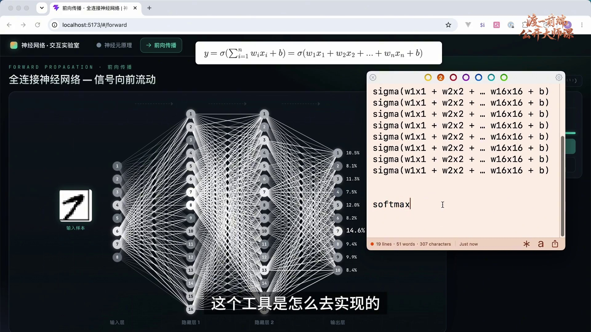
对于十分类问题，可以把输出层未经概率变换的十个分数记作 z₀,…,z₉，称为 logits。分数可以是任意有限实数，本身不必处于 0～1，也不必相加等于 1。
Softmax 将这些分数转换为 pₖ=exp(zₖ)/Σⱼexp(zⱼ)。每个结果大于 0，所有结果之和为 1；因此可以作为互斥类别的预测概率分布。实际计算通常先减去最大分数以提高数值稳定性，这不会改变结果。
将 0.146 显示为 14.6% 只是百分比格式化。Softmax 的指数与归一化运算发生在格式化之前，不能把二者等同。若数字 7 对应概率最大，便可按最大概率规则预测为 7；概率值是否可靠还需要经过训练与评估。
随机初始化的网络可能偶然预测正确，却不能据此证明已经学会数字识别。前向传播只负责根据当前参数算出结果；如何让预测逐渐接近标签，需要损失函数、反向传播和参数更新。
输出旁的百分比显示一次计算后的分布，图中 7 对应 14.6%。这只是当前参数下的预测，不是训练成功或概率校准准确的证据。
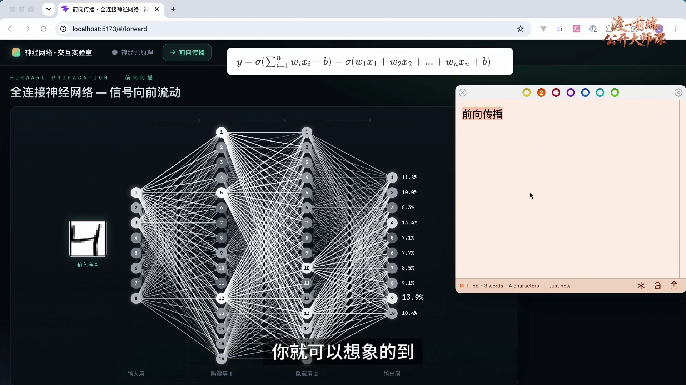
从输入向量开始，按网络结构逐层计算中间表示，最终得到输出，这个过程称为前向传播。训练时需要它来产生预测和计算损失；使用训练好的模型时，也需要它来生成结果。
对本例确定性的网络，在输入、网络结构和激活函数固定时，全部权重与偏置共同决定输出。前面一层的参数会先改变该层激活值，再通过后续计算影响最终结果。这解释了参数为何能够间接影响整个网络的预测。
可以把参数比作一组可调的旋钮，但并非每个旋钮在任意状态下都一定对当前输出产生非零影响。例如某些激活处于不敏感区间时，局部变化可能暂时不改变结果。训练算法需要根据实际计算关系寻找有效的更新方向。
本例输入层只提供数值，没有独立可训练的权重与偏置；隐藏层与输出层才包含本章统计的参数。这是计算职责的区分，不必纠结是否将输入圆点也称为“神经元”。
各层连接展示激活值逐层传递的关系。输入节点用于承载数据，中间和输出节点进行带参数的计算；明暗变化帮助观察影响怎样向后传播。
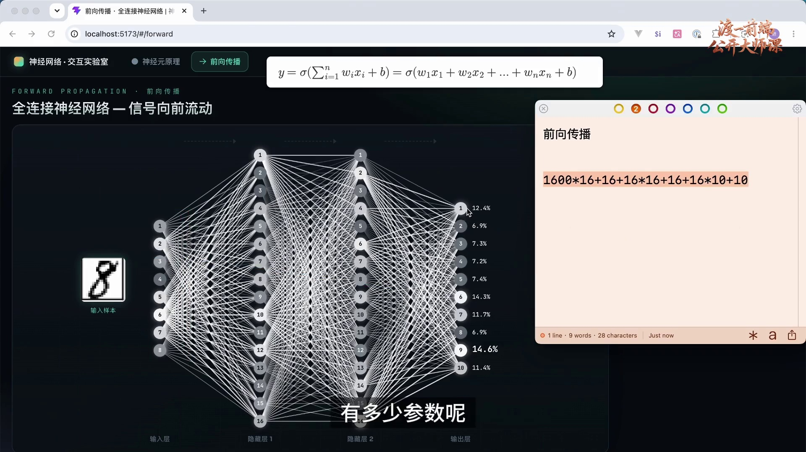
一个带偏置的全连接层，如果接收 n 个输入并包含 m 个输出单元，就有 n×m 个权重和 m 个偏置，共 (n+1)m 个参数。输入向量本身不计入可训练参数。
第一隐藏层接收 1600 个输入，包含 16 个单元。每个单元有 1600 个权重和 1 个偏置，因此参数量为 1600×16+16=25,616。
第二隐藏层接收 16 个输入，也包含 16 个单元，参数量为 16×16+16=272。输出层接收 16 个输入，包含 10 个单元，参数量为 16×10+10=170。
合计为 25,616+272+170=26,058。统计时既要保留权重，也要计入每个输出单元的偏置；图上只显示少量输入圆点，不改变实际采用 1600 维输入的假设。
大型模型的参数规模必须结合具体版本与统计口径。例如 DeepSeek-V3 的官方仓库给出 671B 总参数、每个 token 激活 37B 参数；总参数与每次计算激活的参数不是同一个概念。不能把未经确认的“1.5 万亿”泛化为所有 DeepSeek 模型的规格。
便签列出的三项为 1600×16+16、16×16+16、16×10+10，精确合计是 26,058。该计算只适用于这里带偏置的全连接结构。
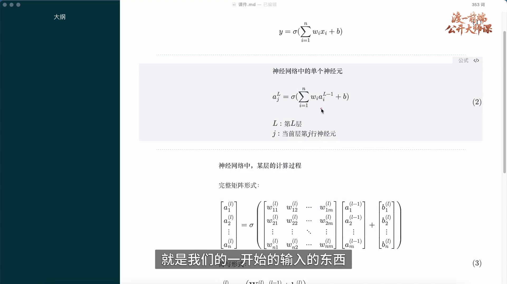
原始输入通常记作 x，而隐藏层的输入来自上一层激活，所以用 a 表示更清楚。令 aⱼ⁽ˡ⁾ 表示第 l 层第 j 个神经元的输出，上标括号内是层编号，不是乘方；下标表示该层的位置。
例如 a₁⁽²⁾ 是第 2 层第 1 个神经元的激活值，a₇⁽²⁾ 是第 2 层第 7 个神经元的激活值。输入层可以统一记作 a⁽⁰⁾=x。
单个神经元的完整表达为 aⱼ⁽ˡ⁾=φ(Σᵢwⱼᵢ⁽ˡ⁾aᵢ⁽ˡ⁻¹⁾+bⱼ⁽ˡ⁾)。其中 wⱼᵢ⁽ˡ⁾ 连接上一层第 i 个输出与当前层第 j 个单元，bⱼ⁽ˡ⁾ 是这个单元的偏置。
这与单神经元公式的原理完全一致，只是补全了层和节点的索引。由于同一层的各单元都使用已经算好的上一层输出，因此可以把它们合并成一次矩阵计算。
图中 L−1 指前一层，j 指当前层的节点编号。为了避免误以为多个节点共享同一组参数，书面公式补全了权重和偏置的节点下标。
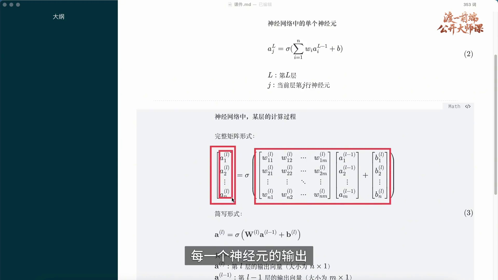
把当前层每个神经元的权重按行排列，得到权重矩阵 W⁽ˡ⁾。若上一层有 n 个输出、当前层有 m 个单元，那么 W⁽ˡ⁾ 的形状为 m×n；上一层激活 a⁽ˡ⁻¹⁾ 是 n×1 列向量，偏置 b⁽ˡ⁾ 是 m×1 列向量。
矩阵与向量相乘时，每一行权重分别与输入向量做内积，得到一个加权和。将这些结果组成 m×1 列向量，再加偏置并逐元素应用激活函数，就得到当前层的输出：a⁽ˡ⁾=φ(W⁽ˡ⁾a⁽ˡ⁻¹⁾+b⁽ˡ⁾)。
这里的整体运算是矩阵乘法，不是两个同形数组逐元素相乘。行与列的内积解释了它如何同时表达多个神经元的计算。
神经网络包含大量矩阵及张量运算，GPU 可以利用并行计算提升合适工作负载的处理效率。同一层的许多运算可以并行，下一层则仍依赖上一层的结果。GPU 并非对任何规模都必然快于 CPU；实际速度还取决于数据规模、内存传输和实现方式。
红框按行标出不同神经元的权重，右侧列向量对应各自输出。图中的乘法应按“矩阵乘列向量”理解；并行化提高执行效率，不改变网络的数学依赖关系。
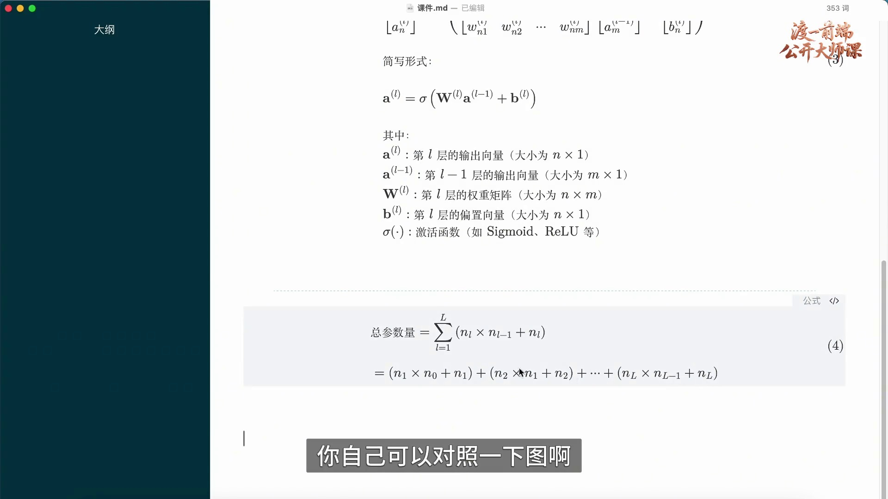
设输入宽度为 n₀，共有 L 个带参数的全连接层，第 l 层宽度为 nₗ，且每个输出单元都带偏置，则总参数量为 P=Σₗ₌₁ᴸ(nₗ₋₁nₗ+nₗ)。其中第一项统计权重，第二项统计偏置。
代入 n₀=1600、n₁=16、n₂=16、n₃=10，得到前面计算的 26,058。这个公式假定各层参数独立且没有额外可训练模块；其他架构需要按实际结构统计。
前向传播解决“给定输入与参数，如何得到输出”。训练进一步解决“如何调整参数，使输出更符合目标”。后续将用损失衡量预测误差，用反向传播计算梯度，再通过优化方法更新权重与偏置。
总参数公式将每层的权重和偏置相加。它与逐层展开的计算一致，也把网络结构、参数数量和后续训练过程联系起来。